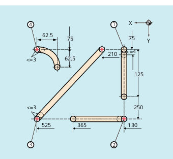
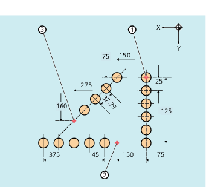

Bei aktiviertem Stanzen bzw. Nibbeln bewirken sowohl SPP als auch SPN eine Aufteilung der für die Bahnachsen programmierten Gesamtverfahrstrecke in eine Anzahl von gleichlangen Teilstrecken (äquidistante Wegaufteilung). Intern entspricht jede Teilstrecke einem Satz.
Beim Stanzen erfolgt der erste Hub am Endpunkt der ersten Teilstrecke, beim Nibbeln dagegen am Startpunkt der ersten Teilstrecke. Über die Gesamtfahrstrecke ergeben sich damit folgende Zahlen:
Stanzen: Anzahl der Hübe = Anzahl der Teilstrecken
Nibbeln: Anzahl der Hübe = Anzahl der Teilstrecken + 1
Hilfsfunktionen werden im ersten der erzeugten Sätze ausgeführt.
SPP=...
SPN=...
| Größe der Teilstrecke (maximaler Hubabstand) | |
Wirksamkeit: | modal | |
| Anzahl der Teilstrecken pro Satz | |
Wirksamkeit: | satzweise | |
Die programmierten Nibbelstrecken sollen automatisch in gleichgroße Teilstrecken aufgeteilt werden.
| Programmcode | Kommentar |
|---|---|
| N100 G90 X130 Y75 F60 SPOF | ; Positionieren auf Startpunkt 1 |
| N110 G91 Y125 SPP=4 SON | ; Nibbeln ein; maximale Teilstreckenlänge für automatische Wegaufteilung: 4 mm |
| N120 G90 Y250 SPOF | ; Nibbeln aus; Positionieren auf Startpunkt 2 |
| N130 X365 SON | ; Nibbeln ein; maximale Teilstreckenlänge für automatische Wegaufteilung: 4 mm |
| N140 X525 SPOF | ; Nibbeln aus; Positionieren auf Startpunkt 3 |
| N150 X210 Y75 SPP=3 SON | ; Nibbeln ein; maximale Teilstreckenlänge für automatische Wegaufteilung: 3 mm |
| N160 X525 SPOF | ; Nibbeln aus; Positionieren auf Startpunkt 4 |
| N170 G02 X-62.5 Y62.5 I J62.5 SPP=3 SON | ; Nibbeln ein; maximale Teilstreckenlänge für automatische Wegaufteilung: 3 mm |
| N180 G00 G90 Y300 SPOF | ; Nibbeln aus |
Für die einzelnen Lochreihen soll eine automatische Wegaufteilung erfolgen. Für die Aufteilung wird jeweils die maximale Teilstreckenlänge (SPP-Wert) angegeben.
| Programmcode | Kommentar |
|---|---|
| N100 G90 X75 Y75 F60 PON | ; Positionieren auf Startpunkt 1 ; Stanzen ein: einzelner Stanzhub am Satzende (auf Startpunkt 1) |
| N110 G91 Y125 SPP=25 | ; Maximale Teilstreckenlänge für automatische Wegaufteilung: 25 mm |
| N120 G90 X150 SPOF | ; Stanzen aus; Positionieren auf Startpunkt 2 |
| N130 X375 SPP=45 PON | ; Stanzen ein; maximale Teilstreckenlänge für automatische Wegaufteilung: 45 mm |
| N140 X275 Y160 SPOF | ; Stanzen aus; Positionieren auf Startpunkt 3 |
| N150 X150 Y75 SPP=40 PON | ; Stanzen ein; Anstelle der programmierten Teilstreckenlänge von 40 mm wird die berechnete Teilstreckenlänge von 37,79 mm verwendet. |
| N160 G00 Y300 SPOF | ; Stanzen aus; Positionieren |
Siehe auch:
Wegaufteilung bei Bahnachsen
Wegaufteilung bei Einzelachsen